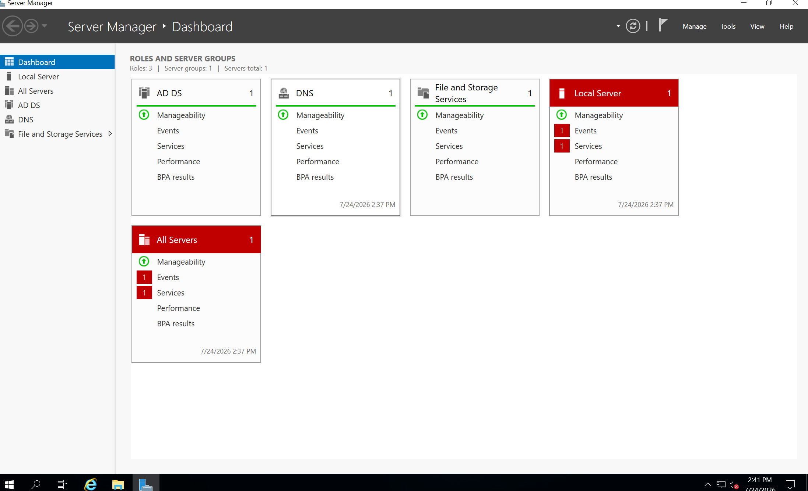
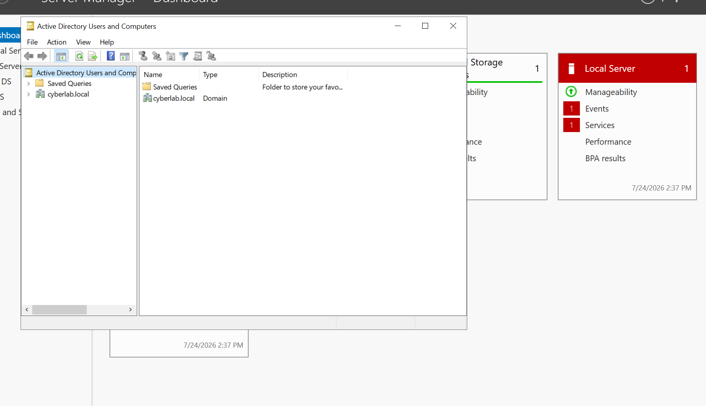
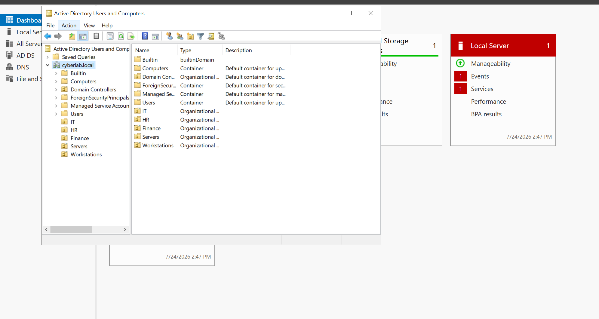
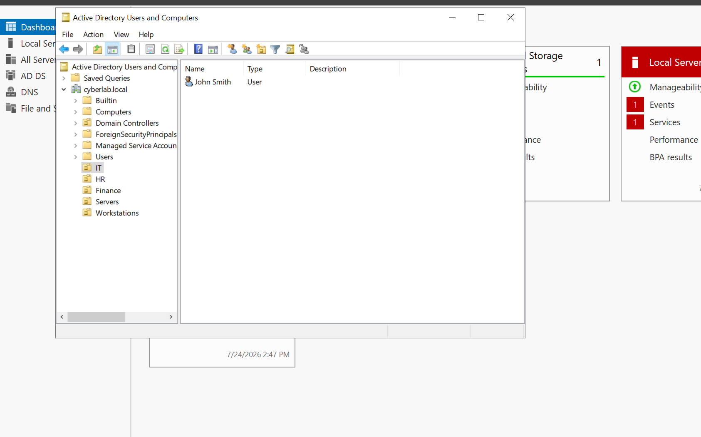
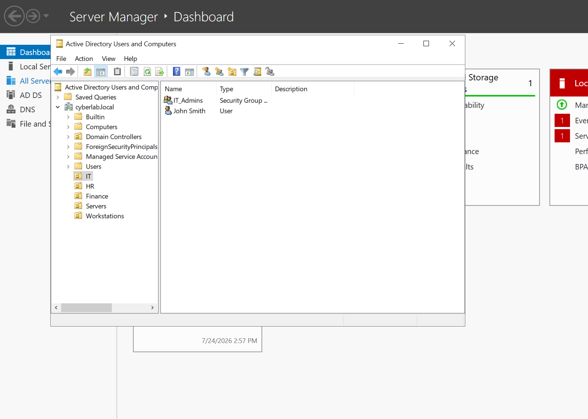
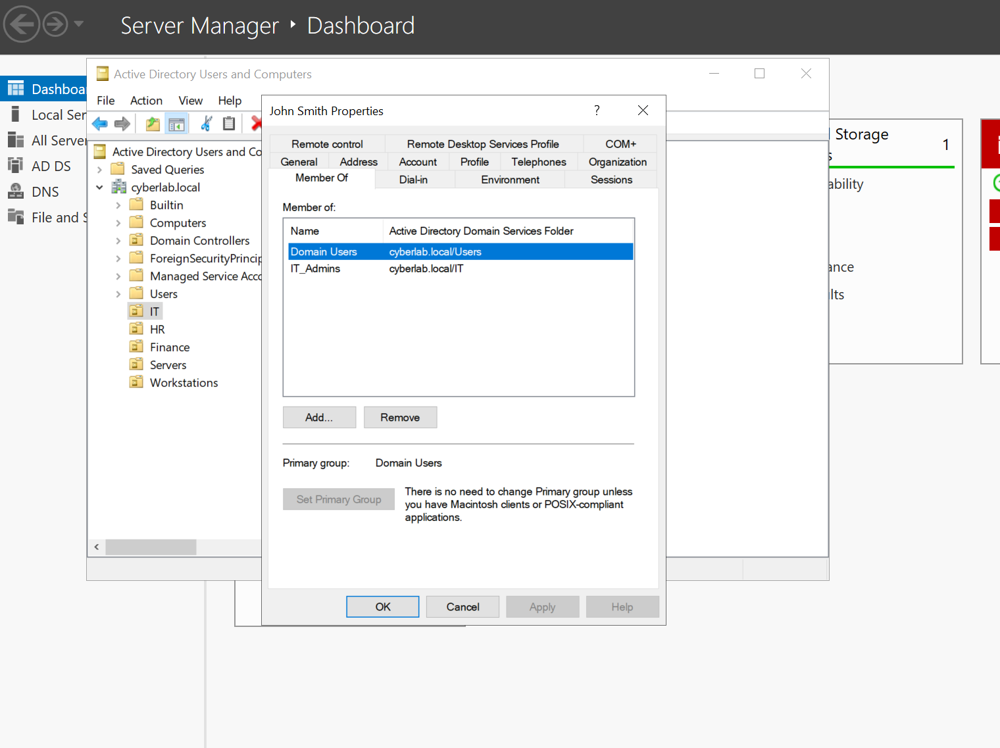
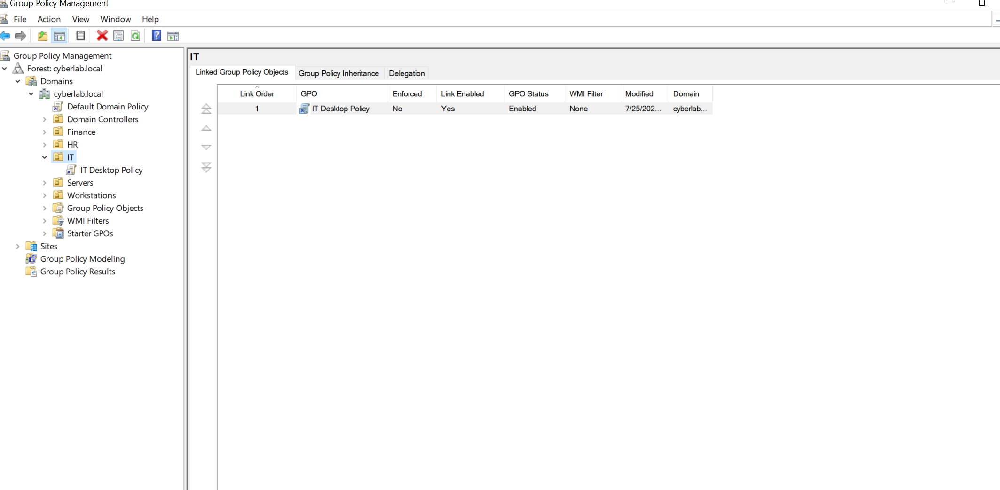
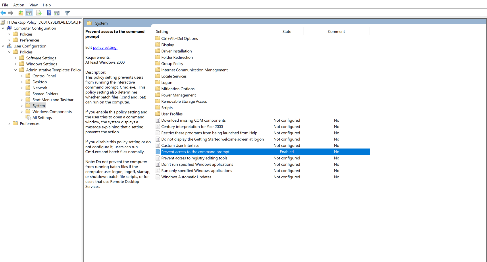
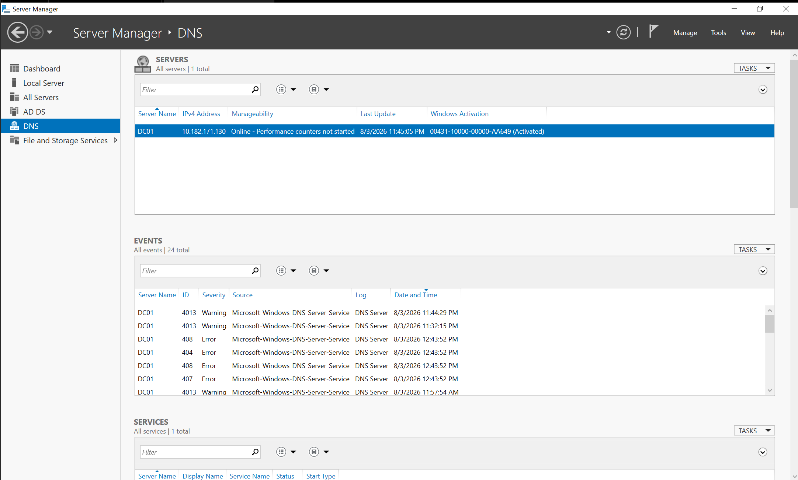
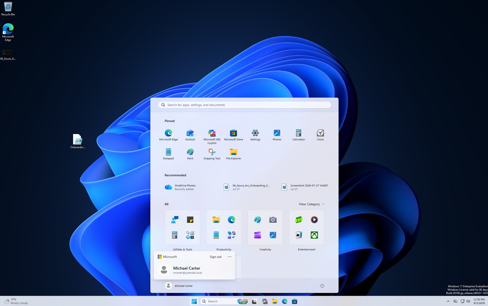

This project demonstrates the deployment and administration of a Windows Server 2019 Active Directory environment. The objective was to build a small enterprise domain, configure core infrastructure services, manage users and groups, deploy Group Policy, and troubleshoot real-world administrative issues in a virtual lab.
This project provided practical experience with Windows Server administration and enterprise identity management. It demonstrates my ability to deploy Active Directory, configure DNS, manage users and Organizational Units, implement Group Policy, and troubleshoot common Windows administration problems.
I wanted practical experience managing Windows enterprise infrastructure rather than simply learning individual features. Building this lab helped me understand how Active Directory, DNS, Group Policy and Windows clients work together inside a business environment while strengthening my troubleshooting skills.
A Windows Server 2019 Domain Controller was deployed with Active Directory and DNS services. Multiple Organizational Units were created to simulate an enterprise environment, followed by user accounts, security groups and Group Policy deployment. A Windows 11 Enterprise client was successfully joined to the domain and tested using domain credentials.
During testing, a Group Policy wallpaper deployment failed to apply correctly. Rather than rebuilding the lab, I investigated the issue by validating DNS, refreshing Group Policy, checking network connectivity, verifying the wallpaper path and correcting the configuration. This reinforced the importance of structured troubleshooting within enterprise environments.
The screenshots below demonstrate the major stages of the Windows Server deployment and Active Directory administration process.










This project provided practical experience administering Windows Server 2019 in an enterprise-style environment. It strengthened my knowledge of Active Directory, DNS, Group Policy, user administration and structured troubleshooting while building confidence with real-world system administration tasks.